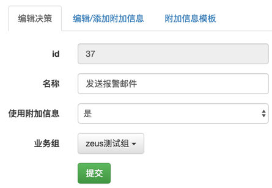
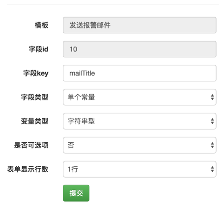
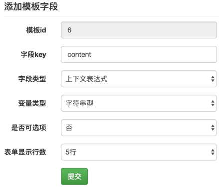
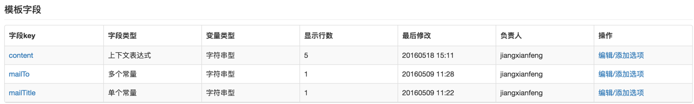
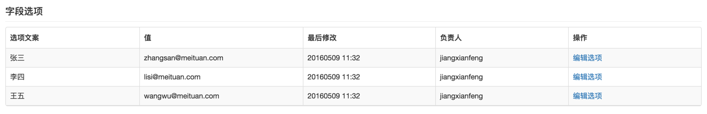
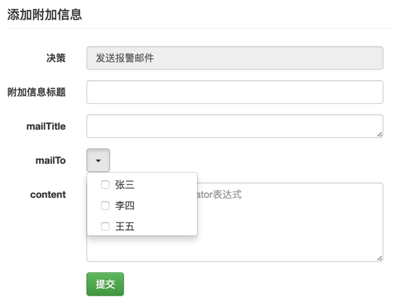
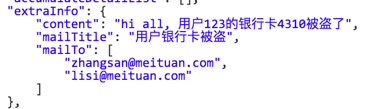
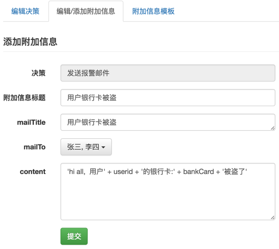
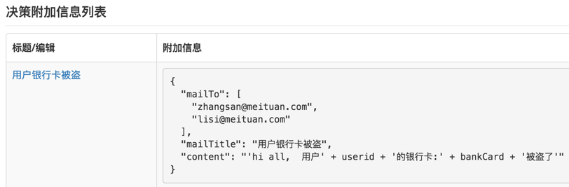
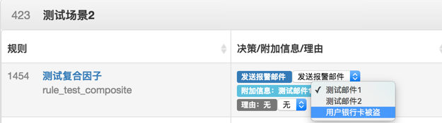

说明：Zeus决策附加信息使用文档
一、背景
业务调用zeus时会执行指定场景的规则并根据配置返回决策id，业务根据决策id去执行相应的操作，但是对于某些决策需求仅仅使用一个id并不能表示足够多的信息，因此通过增加可自由配置结构化的数据作为决策的附加信息返回给业务，这样可以方便业务在zeus配置信息更丰富的决策。可返回的信息包含常量和动态的变量（常量：固定值；动态变量：具有计算逻辑的结果值）。
二、名词解释
- 决策：zeus执行完业务规则后返回的一个标识告诉业务方应该执行什么操作，可以包含附加信息也可以不包含
-
附加信息模板：key-value型数据结构的模板，模板可由业务RD自由定制，zeus根据业务定制的模板生成配置表单，提供给策略人员编辑
-
模板字段：一个模板包含一个或多个字段，模板字段的属性包括：key、字段类型（单个常量/多个常量/上下文表达式）、 变量类型等
- 单个常量：返回一个常量值
- 多个常量：返回多个常量值，如果常量是Integer类型，接口会返回List<Integer>以此类推
- 上下文表达式：执行完规则后用当前上下文执行表达式，并将执行结果返回
- 字段选项: 如果有需要可以为模板字段设置多个选项
-
- 决策附加信息：key-value型数据，在决策所指定的附加信息模板中填充具体的数据后就是一条附加信息，一个附加信息只属于一个决策
三、操作说明
zeus-client的版本需要升级到1.2.2
以风控的一个决策发送报警邮件为例，需要邮件标题、收件人、邮件内容等字段，并且其中邮件内容需要使用上下文参数动态生成结果值，根据这个需求整个使用流程如下
3.1.决策与附加信息模板配置（业务对接RD负责）
-
进入决策导航栏，创建决策：发送报警邮件，在是否包含附加信息中选择是，生成决策如下

- 此时还不能编辑附加信息，需要编辑模板，点击进入附加信息模板tab
-
添加邮件标题字段如下，并点击提交，字段key请使用英文，字段类型请看本文第2部分

-
如果某个字段需要使用上下文参数写表达式，并且如果内容比较长需要生成多行的表单，比如邮件内容的配置方式如下

-
其它模板字段配置流程忽略，配置完成后在附加信息模板tab下可以看到整个模板的配置如下

-
如果对于某些字段有常用的选项，如mailTo字段可以添加常用联系人作为备选项，点击上图中的编辑/添加选项链接，即可进入字段编辑页面添加备选项，如添加收件人张三李四王五等人的邮箱如下：

-
在上图的页面中返回上级，点击添加/编辑决策附加信息tab可以看到，zeus会根据模板配置自动生成附加信息配置表单如下：

- 至此附加信息模板配置已经完成，但还不能在线上使用，请RD继续看下一步
3.2.根据决策与附加信息模板实现代码（业务对接RD负责)
zeus在执行完规则后会根据场景配置返回相应的决策以及附加信息，决策附加信息是一个key-value型的数据结构（具体类的定义略），RD需要开发代码实现根据决策id执行决策流程，如果是一个包含附加信息的决策，需要根据3.1中定制的附加信息模板解析附加信息并利用附加信息执行决策，例如本例中执行发送邮件的伪代码示例如下
//线上和线下的id可能不一样
if (decision.id == 37) {
executeSendMailDecision(decisionExtraInfo);
}
public void executeSendMailDecision(Map<String, Object> extraInfo)
{
String title = extraInfo.getString('mailTitle');
List<String> mailTo = extraInfo.getList('mailTo');
String content = extraInfo.getString('content');
try {
sendMail(title, mailTo, content);
} catch (Exception e) {
//handle exception
}
}在线下完成这段代码的开发和测试之后将代码上线，至此RD工作完成
如果调用zeus的上下文中userid = 123, bankCard="4310"，一个返回结果的示例如下

3.3.业务对接RD注意事项
- 当场景配置中使用了某个模板，则不能：1.不能修改字段key，2.不能删，但是可以增加字段，所以需要在开发测试时尽量考虑清楚
- 模板可以增加字段，增加字段后之前在线上配置的附加信息没有该字段会返回null，注意兼容（也可以编辑附加信息并加上）
- 线上和线下决策id不同
- 受传入参数的影响，表达式字段执行结果可能出错，这一点同因子和规则表达式
3.4.编辑并使用附加信息(业务策略人员负责)
在RD完成3.1和3.2的工作后，可由负责策略的策略人员或其他人员负责附加信息的配置，并在场景配置中使用附加信息
-
使用上述模板编辑一条附加信息

- 表达式字段需要测试，方法同因子和规则表达式
-
生成一条发送报警邮件决策的附加信息如下：

-
在场景配置中使用发送报警邮件的决策，并选择上图所配置的“用户银行卡被盗”这个附加信息，如下图所示

- 表达式测试，如果附加信息所使用的模板含有字段是上下文表达式类型，则需要对这个附加信息相应的字段进行测试，所有表达式字段测试完成后才能设置就绪，只有就绪状态的附加信息才能在线上使用
- 策略人员所要做的工作就这么多
策略人员注意事项：
- 不要改模板，模板由业务对接RD负责
4.参考：技术方案
对技术实现有兴趣可移步：决策附加信息设计方案